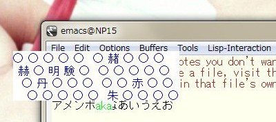
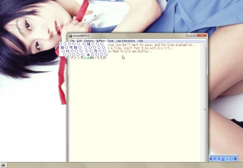

まさか!の単漢字入力。IME『風』

私は大学時代、パソコン関連のサークルに所属していた。サークルに入ってまず最初にさせられたのが、タッチタイピングの練習だった。「タッチタイピング」とは「ブラインドタッチ」とも呼ばれ、両手の全ての指を使い、キーボードを見ずに思ったキーが打てる技法のことである。 パーソナルなコンピュータは普及しだして日が浅く、そこにはサークル設立時のメンバーだった人が、博士課程で追い出されずに残っていた。あの方は、俺にタッチタイピングなぞ必要ない、プログラムはキーを見ながら人指し指で打てばできると、のたまっていたが、下位のサークル員はすべてタッチタイプを学んだ。 そのサークルで私が次に教わったのが、当時 PC-9801 でも使えるようになったばかりの数式を美しく印刷できる組版システム TeX と、日本語「FEP」の『風』だったと記憶している。 FEP とはフロント・エンド・プロセッサの略、今の IME・インプットメソッドに相当するものだ。当時、コンピュータ分野はアメリカがほぼ独走状態で先行し、日本は量産技術でやっと対抗しているような印象だったが、当然、プログラムに限らず操作は英語でなされるのが前提だった。日本語を使って操作するときは、すでにあるプログラムに、あたかも入力に前からかぶせるように、フロント・エンドに処理をして、渡すという考え方になっていた。 もちろん、この解釈だけが正しいわけではないだろうが、しかし、このような考え方に立つと、アメリカに対する一つの「逆転打」の可能性を見ることができた。すなわち、「フロント・エンド」という、英語しか使わないアメリカ企業が参入するのがとても困難な領域で、しかもユーザーにより近いところで、アメリカの独走をはばむような成果を出せるかもしれないという可能性である。 それはカナ漢字変換、カナをできるだけ入力者の意図を賢く汲んで変換するという「人工知能」の先端分野が実用されるところとなっていた。 が、『風』はそのような FEP でありながら、「人工知能」たることを拒絶するような単漢字変換の FEP であった。まさかと思うかもしれないが、単漢字変換とは文字通り、漢字一文字をその読みをもとに表示された変換表「仮想鍵盤」から選択して入力する方式である。それは今 Windows の IME となった『風』も変わらない。 日本ではインターネットの前身と言っていい草の根BBSでは、まだ高価だったパソコンを使いながら、「くだらない会話」が繰り広げられていた。そういった会話を打ち込もうとすると、まだ非力な「人工知能」だった当時の FEP は変換ミスを誘発するばかりだった。コンピュータ用語はカタカナが多く、そういった事情で漢字を使っていない者も馬鹿にされる状況ではない。単漢字変換は「くだけた表現」を入力するには合理的と判断される状況はあった。 しかし、「単漢字変換」のインパクトはそういうことではない。つまり、人間の仕事を少なくするのがコンピュータの役割と言われる中で、覚えるのは人間の仕事という主張、熟練することを前提にすれば、細かいニュアンスを「人工知能」に伝えるよりも、自分の手が覚えたほうが結局速いのだという主張を、実感させるものだった。 当時、コンピュータ系のサークルに集まったぐらいだから「人工知能」に興味を持っている者が多かっただろう。当時、何度も締め切りを延長して作った会誌を今見るとそう感じる。『風』の在り方は私だけでなく「我々」に衝撃を与えたと言えよう。 ただ、大学のサークルは、OB が使えなくていいというタッチタイピングを皆が覚えるような一クセも二クセもある人間の集まりでもある。そのような衝撃を語り合うことはなかったように思う。 だが、サークルとして何かやろうという話をしたとき、個人がパソコンで何かやろうとしたとき、『風』への不満を元にした新しい FEP を作るという方向を何度か向いた。ある者はスピードを追及し、ある者は別のマシンに移殖しようとした。 専門性の高い TeX の個人用 PC への移殖にみられるようにコンピュータの進化のスピードは速い。私が上級生になるころには、演習で個人個人がフリーソフト文化まっさかりの「Unix ワークステーション」に触れられるようになっていた。 皆でフリーソフトとして『風』を触れるようになりたいねと言った。サークルではプログラムを組むのを趣味とする人間は減っていたので、下級生が辞書を作れば、私がプログラムを書くよといったことを述べた。 私は研究室に入りびたるようになるのを境に、サークルに顔を出すことが少なくなった。私に作れた『風』は、Emacs というエディタの上でしかも特殊な環境でしか使えないものだけだった。私は口先だけだ。彼らは辞書を作ったという話も聞いたが、私はそれを手に入れてない。 「インターネット」つまり WWW (ワールドワイドウェブ)が爆発的に普及しはじめたころでもあった。プログラムを組むのが趣味ではないとしていたはずの下級生の一人が、今の Google Street View のように、デジカメで撮った写真を表示しながら校内を散策する Web アプリケーションを書いていたのに驚いたことを覚えている。彼は原子力工学科に進んだのだったな…。 ■Windows の『風』 私は「ニート」になってしまったこともあり、サークルの仲間と連絡しあうようなことはない。ただ、Twitter 上で元サークル員が集まっているところを知っており、そこを ROM (リードオンリーなメンバー、つまり読むだけ)している。私はインターネットの恵みを恩典のように受け取っている。 我々が作った「『風』互換ソフト」は忘却のかなたとなったが、そんな時代でも単漢字入力日本語 IME 『風』は更新され、Windows 7 にも対応している。 私は大学生からずっとこの系統の「FEP」を使い続けている。前述のように自分で拡張したものを作って使ったりもしたが、Linux から Windows に移ってからは、この「元祖」を使っている。 昔と変わらず、くだけた表現も苦にならない。「なぜなら、ずっと苦業だから」というのは禁句だ。(笑) 今は、変換表での位置がわかりにくくなったら、その語では MS IME に切り換えるという「堕落」したワザもある。将来的には、自分でもう一度、今度は電子辞書を引きながら使えるような拡張版を作るという夢もあるのだが、そういう「堕落」で満足してて、その方向の開発は今はやってない。まぁ、Mac を使わないといけないとかなったら、また考えるかな…。 ここでは、インストールと利用方法、そしてこのソフトに関しては「元祖」にはない「我々」がアイデアとして実装していたことを紹介する。 ■操作方法 操作方法については、『風』のアーカイブに詳しいマニュアルがあるのでそれを読んでいただくのが一番良いはずだが、アーカイブを手に入れる前、インストールの前を前提に、ここでは簡単に操作の雰囲気のみ紹介しよう。
左ではデスクトップの上に Emacs というエディタを実行し、その上で、入力に『風』を使っている。ATOK や MS IME など普通の日本語インプットメソッドでは、カタカナや英語を文中で明示的に打とうと思ったら、打つ前に切り換えるのが一般的だが、『風』は、とにかく「読み」を先に入力して<b>あとから</b>「カタカナ確定キー」(変換キー)や「半角英語確定キー」 (Return キー)、「全角英語確定キー」(Tab キー)、「ひらがな確定キー」(無変換キー)を押してそれが、何だったかを決める。 文字入力→確定→文字入力→確定→…が崩れないのが<b>『風』のリズム</b>である。 単漢字入力もこの流れの中にあって、漢字変換キーであるスペースキーを休符のように(何個か)挟んで、次のキーでどの漢字かを確定する。そのキーにどの漢字が割り合たっているかを見せてくれるのが、このページの最初の写真の「<b>仮想鍵盤</b>」である。 文字がキーボード上のキー一つ一つに配置される。つまり、画面を見たままキーがどこにあるか指が覚えている…<b>タッチタイピングがある程度できるのが、「『風』使い」になるためのほぼ必要条件</b>となる。(それが『風』のハードルの高さとなる。) 読みが違っても漢字がキーボードのどこに割り当てられるかは決まっている。コンピュータが「学習」してリアルタイムに位置や順序を変えるなんてことはない。よって、よく使う漢字は覚えてしまっており、仮想鍵盤の表示を見ずにある程度入力できるようになる。人は、画面を見て選択することに案外時間をとられる。理想的には熟練により画面での確認をすべてスッ飛ばせる。それが『風』の入力スピードの速さの秘密というべきものとなる。 (ただし、私はずいぶん長く使っているが、ほとんど位置を覚えていない。orz) ところで、例えば「こう」だとか「し」という読みを持つ漢字の数はとても多く、キーボードのキーだけでは足りない。そういうときは、スペースをもう一度押すことで「次のページ」が表示され、そこにずらずらっと別の漢字群が並ぶ。このとき『風』はページが変わったことがわかりやすいよう、ページごとに文字の色を変えて表示する。 私がサークルにいたころ、あの時代のとーーーっても重い白黒ノートパソコンを持ち歩いている方がいた。当然白黒ディスプレイなので、ページが変わっても色が変わらない。だから「互換ソフト」では、ページ数(3ページの中の最初のページだと「1/3」とか)を表示するようになったのを覚えている。 ■インストール 『風』はシェアウェアで、2012年5月4日現在 3000 円で売っている。後述の作者のサイトや Vector 社などからダウンロードできるが、銀行振込で支払う必要があるようだ。バージョン更新ごとに試用期限が設定されており、現在は試用はできなさそうだ。 バージョン 2.23 未満では Windows Vista や Windows 7 に公式に対応しておらず、後述の関連に挙げた記事のように UAC (ユーザーアクセス制御)を操作してインストール＆シェアウェアキーの登録をする必要があった。 現在のバージョン 2.30 では、Windows 7 に対応したインストーラがある。シェアウェアキーの登録も前と違ってインストール後は管理者権限がなくても登録できるようだ。 ただし、以前のバージョンを UAC を操作して使っていた者などは、一度アンインストール操作をする必要があるそうで、これがなかなかうまくいかなかった。。 2.23 の WindUninstall.exe を「管理者として実行…」すると、何かと警告が出て、\Windows\System32 以下の Wind2.ime が削除されない。再起動を繰り返したりしながら、2.30 の WindoUninstall.exe を使ってみたら、Wind2.imeは削除された。そこから 2.30 の Setup.exe を「管理者として実行…」でインストールすると、Windows 7 は「うまくインストールされなかった可能性がある」と述べ、「推奨設定でインストール」を選ぶともう一度 Setup.exe が起動するが、何かと警告が出る。 ただ、再起動を何度かやりながらしてると、特に難しいところなくインストールはされたようだ。 なお、2.23 から 2.30 への移行において重要な変更があった。<b>マニュアルには『風』の設定ファイル Wind2.ini 等は昔のまま \Windows 以下と書いているが、 Windows 7では、これは \ProgramData\Wind2 の下に入っていた。</b> ■バージョン 2.30 でシャットダウンにものすごく時間がかかるとき もしかすると、2.23 を入れていたような私のところだけの現象かもしれないが、2.30 に上げたあと、「シャットダウン」を行うとすごく時間がかかるようになり、「シャットダウンしています」の画面が出る直前に『風』の警告として「読み辞書が読めません」と出るようになった。 なぜ「読み辞書」がシャットダウンに必要かはわからないが、終了処理をしているときに管理ユーザーで『風』が動かされていると考えると、UAC (ユーザーアクセス制御) があやしい。 読み辞書というのはたぶん \ProgramData\Wind2\Wind2.rea のことだろうとあたりをつけ、とりあえず、それだけ、SYSTEM ユーザーも明示的に読めるようにした。(右クリックから「プロパティ」の「セキュリティ」タブで、「編集」して「追加」のオブジェクト名「SYSTEM」で「OK」。) なんと、それだけで普通にシャットダウンされるようになった。他のファイルのパーミッション(セキュリティ制御)はいじってないのに…。同じことで困ってる方は、お試しあれ。 ■私の設定 その１ Windows の『風』使いがまず最初に覚えなければならないこと。それは <b>Shift+Ctrl で IME を切り換えられる</b>ということだろう。上では「堕落」と書いたが、『風』の辞書は古く、Unicode の新しい記号や文字が入力できなかったりするため、MS IME に切り換える必要はある。このとき、タッチタイプの右手をマウスに持ち換えて、右下の IME アイコンを操作するのはリズムを大きく崩す。 次に知っておくべきなのが、標準の漢字モードへの切り換えが 「Alt＋半角/ 全角」だということ。これは、私などは設定をいじって MS IME と同じ Alt なしの「半角/全角」に置き換えているが、今回のように再インストール直後などはコロッと忘れてしまいがちである。(しっかりしろ。 >> オレ。) そして、2.30 になっても変わらない『風』のエラー。ときどき仮想鍵盤が出たままになったり、出なくなったりすることがあり、その対処方法を知っておかねばならない。このエラー、『風』の設定画面を呼び出そうとすると、この呼び出し自体は失敗するが、その後、仮想鍵盤が出るよう復活することが多い。このときの設定画面の呼び出しは、アプリケーションからする必要があり、タスクバーからのものでは無意味なようなので、機能キーとして「環境設定」に何かのキー(私は「ひらがな」キー)を割り当てておけば良い。 さて、以上は告げねばならないことなので、まず書いた。この先はゆっくり「私の設定」を解説していきたい。 設定は「設定画面」でなく設定ファイルをいじる。どこかに保存して設定ファイルをいじり、それを上書きコピーするような習慣にすべきだろう。『風』の設定ファイルは、なんと日本語で「する」とか「しない」とか指定するようになってるぐらいで、普通に日本語で読め、難しいところはない。あえて言えば特殊キーの『風』内での名前がわからないときなどに、設定画面でそのキーを指定して、その名前を読み出したりする必要があるぐらいだ。 上述のとおり Windows 7 では設定ファイルは、\ProgramData\Wind2 の下に集まってあり、Wind2.ini をまずいじる。 Wind2.ini の最初の設定項目はローマ字変換表である。これは古いパソコンユーザーほど、独特の好みを持っているはずで、私もこれまで使ってきた変換表を活かして、私用の変換表を作って使っている。wnd という拡張子のファイルだが、これも読めるファイルになっている。変わったところと言えば、「ヶ」を(半角の)「ケ゜」などと表すことぐらいだろう。 ところでおもしろいのが、その次の「英字入力副変換表」である。 先輩が「互換ソフト」を作るとき、「一括変換」が邪道かどうか議論していたのを覚えている。つまり、「決まった表現」というのがあるとき、普通の FEP は短い読み(例えば「つきに」)に特定の長い表現(例えば「月に代わっておしおきよ」)を登録することができ、それを使われるといくらなんでも『風』使いが「打ち負ける」ので、この機能だけは入れるべきだという主張があって、結局入れたのだったと覚えている。 この「一括変換」に相当する機能を「英字入力副変換表」で実現できる。 例えば、MyInfo.wnd などというファイルを作り、次のように入力し(SJISで)保存する。Wind2.ini で「英字入力副変換表=MyInfo」と「英字入力副変換確定キー=SHIFT+無変換」「英字入力副変換表示=しない」を指定すると、"#addr" のあと「Shift+無変換」で住所が入力される…といった具合になる。 よく使う記号のキャッシュ [ 『 ] 』 < 〈 > 〉 youbin 〒 個人情報 #name ○山□太 #addr 〒xxx-xxx 大阪府○○市○○ #tel xxx-xxxx-xxxx つまり、『風』の「ローマ字変換表」には漢字も使えるのだ。また、「互換ソフト」の話になるが、スピードもそうだが、昔はいかに「常駐サイズ」…メモリ使用量を減らすかというのも大事なところで、単漢字変換の辞書は OS の入ったフロッピーディスクにでも置いてディスクアクセスすればいいとしても、ローマ字変換表ぐらいは、メモリに置かないといけない。だからいかにこれを小さくするかも大事で、ハッシュ表を使うのももったいなく、線形アクセスのほうがいいとかいう議論もしていた。そこからすれば変換表に漢字が使えるのは贅沢な話である。(笑) 「状態表示ウィンドウ表示」は、上で設定画面に「ひらがな」キーを指定していることもあり、表示は「しない」にしてある。ただ、『風』使いではない親のパソコンでは、必要なとき、変に『風』に切り換わってないかわかるよう、表示「する」にしてある。 左のような「状態表示ウィンドウ」は、正直なところ IME などに比べてカッコ悪い。 『風』の仮想鍵盤は、変換ごとに今文字を入力しているポイントのちょうど上 (または下)にその都度表示される。これをインプットメソッドのレベルですばやく行うには、ウィンドウシステムに関する特別な知識が必要とされることが多い。私が Emacs で作ったときは、それが難しく、最初は固定位置(エディタの上あたり)にずっと表示しつづけるように作ったものだった。 そういうものがあれば、「状態表示」なんていくらでもできるし、そのころのアイデアとしては、ちょうどバナー広告が出てきた時期でもあったので、「仮想鍵盤」の空きスペースにそういうのを表示してもおもしろいかとか考えていた。 逆にいうと「状態表示」というのを安易に認めるとそういう「うっとうしい広告」などを出そうとするプログラムが増えるかもしれないから、そういった API (とか権利処理)が難しくなっているのかなと想像する。 『風』でのキーの打ちミスの処理は我々の間では評判が良くなかった。上で「理想的には熟練により画面の確認をすべてスッ飛ばせる」と書いたが、実際に画面確認をほぼせずにとにかく打ち込んでしまったとき、「元祖」のエラー出力だと続いて入力されてしまい、「くだけた表現」の特徴から、それがエラーかそういう意図だったが一瞬わからなくなるからだ(少なくとも私はそう)。 「間違っているかどうか確認するより、単語または文の全部を消したほうが早い」というのが我々のドグマだった。 よって、ブザーを鳴らしたり一瞬フラッシュをしてミスの入力は無効にするのが「互換ソフト」の対応だった。「元祖」においてそのドグマに近い設定は、「エラー出力形式=出力しない」で、打ちミスのあとはアプリケーションへの入力がブロックされる形になる。 ただ、『風』のエラー出力の形式は、その仮想鍵盤の点滅も含め、入力できないことが入力のミスなのか漢字のほうの不具合なのかがわかりにくい写植工場の雰囲気を残しているのかもしれないとも想像する。 ■私の設定 その２：私の作った「互換ソフト」のアイデアをもとに 私が「互換ソフト」を作ったのは、Emacs というエディタ上だった。当時、エディタは様々な入力支援機能を実装するための「マクロ言語」を持つことが多かったが、そんななか人工知能系言語とも言われた Lisp というプログラミング言語を言語としても実用可能なレベルで「マクロ言語」として積んでしまったのが Emacs だ。 英語話者にとっての「フロント・エンド」とはまさにエディタであったということかもしれない。 そしてその時代、FEP はインプットメソッドというウィンドウシステムの機能として提供されることになった。インプットメソッドの辞書はサーバー上に置かれる。誰かが新しい単語を入力すれば皆が使える…コミュニティに適したように辞書が学習される…それが良いとされる時代になった。 「『風』使い」たる私がまずはじめたのは、そのようなサーバーへの集約を受け容れながらも、自分のところでは学習をオフにしてできるだけ同じリズムで思った言葉が出るようにすること、そして、他の人も使えるように単漢字の辞書を増強することだった。 ある意味、私は「人工知能用」として作られたプラットフォームの上で、「学習」をブロックするコードを書き、コミュニティに、そのコミュニティが用意した共助の手段はすっとばして、違う方法で貢献する道を探したのだった。 だから「互換ソフト」の機能を、まず私は仮想鍵盤を表示し変換候補をそこに流しこむことからはじめた。 それまでの「互換ソフト」は他のインプットメソッドがない状態で、標準化された API を多く使って独自のインプットメソッドを作っていたが、私は、すでに「人工知能型」のインプットメソッドがあるなか、そのコードに侵蝕するように機能を上乗せし、『風』使い以外の人もその機能だけは、できるだけ違和感なく使えるように作った。 その後で、『風』に似たキー配置を個人設定でできるようにし、単漢字については配列辞書を作って固定位置に流しこめるようにした。配列辞書はより早く小さく動くよう、個人がローカルに起動した「サーバー」からプロセス間通信を利用して読んでいた。 この点は辞書の著作権への配慮という面もある。他のインプットメソッドに相乗りしている点は、クラウド上でプログラムを難しくすることに別途料金が必要とされるようなことがあるとしても、オープンな場での同意の上での「ブロッキング」なので、金銭的補償を求められるようなことはないだろう。 おかげでインストールがとても難しくなり、私の所属研究室以外では、同じ Emacs 環境でも、動き辛いものになってしまっていた。結局、2,3 人に動いているところを見せられただけで、サークル内で他者が使ったという話も聞いていない。 私としては『風』としても動き、しかも他のインプットメソッドの「多文節変換」の結果も使えるハイブリッドなシステムとして満足していたのだが。 Emacs のインプットメソッドは、ローマ字カナ変換部分は、他のヨーロッパ系言語との互換性を意識してか、変換後の文字列がキーとして入力されたかのような処理をしたかったらしく、逐次変換されローマ字として読んだ部分は保存されてないようだった。 よって苦肉の策として私は、ローマ字カナ変換の逐次処理はブロックし、入力中はアルファベットでしか見えないようにして、変換キーが押されたときにローマ字変換処理をはさんでカナ漢字変換に渡すようにした。よって、『風』における半角英語確定の Return キーは、単純な入力確定キーのままでよかった。 私はその表示に慣れたので「元祖」に戻った今も、そのような表示になるよう「読み後退単位=英字」「読み表示形式=yomi」に設定している。 あと現在も Windows 上で Emacs を使い続けているので、「やりなおしキー=CTRL+G」と、Emacs に合わせている。 ■私の作った単漢字辞書 上で「こう」や「し」の読みに対する漢字はとても多いと書いた。ページに分けられ表示されるとしても、実は簡単に見つけることは難しい。そういったとき『風』では「こう：かま」と入力すると、「こう」と「かま」の両方の読みを持つ候補の「構」だけが表示される And 検索のような機能がある。"：" はさらに絞り込むため三つ四つとつなげられる。 私の「互換ソフト」では単漢字辞書だけでなく単語辞書が自然に使えたため、最初の読み(例えば「こう」)の候補に次の読み(例えば「かまえる」)の候補すべてで使われうる漢字があれば、ハイライト(強調表示)するという実装に自然になった。そうなると単漢字の表示位置を探すためだけにその読みが含まれる単語の読みを入力することが自然になる。(例えば「こう：こうぎ]と入力して「講」を探すといったように。) 実は『風』も、内部では似た処理をしていると思う。二つ目以降の読みでは位置までは確認していないのではないか？そう考えて、現在の『風』の辞書の拡張として、私がとても便利に使っていた部首辞書を使えるようにしてくれと「元祖」の作者にお願いしたが、それは断られた。(部首辞書とは、例えば「＠きへん」などを「読み」として入力するとその部首の単漢字が候補になるようにしていた。) そこで、自分で辞書を作れないかと辞書のみ軽くリバースエンジニアリングしてみたりしたが、辞書をテキストにできても、テキストから辞書にすることはできず、辞書の構造を教えて欲しいと作者に頼んだが、それも断られた。 『風』系では熟練がものをいうため、辞書は安易にいじってはいけないものだ。でも、自作のハイブリッドな「互換ソフト」によりそれ以外の在り方を知って味を占めた私はどうしてもそこが気に入らない。 今は再び「互換ソフト」まで作れないかもしれないが、単漢字辞書だけ作っておけば、いつか使う日もくるかもしれない。もしかするとサークルの仲間が作った辞書がいつか手に入るかもしれないが、それまでは『風』系ではないフリーの漢字変換辞書があるので、それを元にアルゴリズミックに辞書を作れるようになっておこうと考えた。 「＠きへん」といった部首辞書は、絞り込みに使うだけなので単漢字辞書ではなく単語変換辞書でいい。むしろ、単漢字の配列を全面的に見直すなら、部首ごとに表示されやすい位置をまとめたらいい。でも、頻度が高いのが先にするとしても、「常用漢字」などと指定されているものは頻度が高くなくてもやはりまとまって出たほうがいい。…などと考えながら、とりあえず辞書を作ってみたのが、以下の辞書になる。 ●jrf_tankanji-20120505.zip アーカイブには、自分用の汚いスクリプトも同梱した。UTF-8 で書いたドキュメント(00README.utf8.txt)以外は、2005年ごろに作ったもので、漢字コードは euc-jisx0213 になっているのが特殊なところだ。 スクリプトの最初を読めばわかるように、ネットでフリーに手に入るものを中心に辞書作成作業を行っているが、『風』の辞書も参考にした部分がある。よって、<b>『風』のライセンスを持っていない方はご遠慮いただきたい。</b>そういった特殊な条件による同人的配布で、ダウンロード数を私が確認できるサイトに置いてある。 例えば、「常用漢字」はある程度改定される。サークルの辞書が手に入るようになったら活かしたい。よって、他のインプットメソッドのように辞書がリアルタイムで変化することはないかもしれないが、コミュニティの変化をもとに、<b>折をみて自動性をもって細かな変化が起こることが前提の辞書</b>となる。 フリーなものをフリーなままにどこかに置いて売ってよくても、それを元に作った著作物である辞書を売って良いのかはわからない。もちろん『風』辞書に関しては問題がある。ただ、今のところサークル仲間の辞書は含まれておらず、私の作った部分はパブリックドメインと考えてもらって良い。 だから、そういったフリーの部分にも対応できているなら、『風』の作者(から権利をもらった方)が、上の辞書を『風』用に変換して販売することに、勝手公開をする同人データ著者たる私が反対できるわけがない。 ■関連 ●《風のくに》。『風』の作者の公式サイト。詳しい解説がある。特に「風の里」の哲学は、『風』使いならずとも、一読の価値ありと思う。 ●《超多段シフト方式日本語入力システム「風」の詳細情報 : Vector》。個人サイトからのダウンロードに制限がある方や不安がある方は、こちらからもダウンロードできる。 ●私の Wind2.ini。いちおうこれは公開するが、ローマ字変換表の MyWind2.wnd はつけない。MyInfo.wnd は上述のとおりなのでそれを作り、 MyWind2 のところを「英字入力主変換表=Ｒｏｍａｊｉ」などとすれば使えるはずだ。 ●デスクトップの背景は毎回ランダムに変えている。今回は、ネットで見つけた「綾波レイ」のコスプレをする「さちえ」さんの写真が、「たまたま」写り込んだ(^^;)。この写真が気に入って、「さちえ」さんの団体の同人誌や CD-ROM を(新品ではもうなかったので中古で)いくつか買い求めたが、ズバリのものが入った ROM はまだ手に入っていない。『Premium A/April』 (CD-ROM) にはよく似たこれもいい写真があったが…。 ●《日本語IME「風」をVistaにインストールするとき、解除キーを登録するところで失敗する》。《「風」の wnd ファイルを Meadow でエディットすると起動しない！》。以前の私の『風』の不具合に関するブログ記事。 初公開：2012年04月29日 02:19:54 最新版：2012年07月18日 03:01:39
Trackbacks: 《quail-naggy.el: 単漢字変換 Input Method for Emacs.》 from JRF のソフトウェア Tips About the quail-naggy.el Windows 用単漢字変換日本語 IME 『風』の実用性とアイデアを受け、将来的に非 Windows 環境や IME 非対応の Windows 用 Emacs でも『風』のようなインプット・メソッドが使えるようにしておこうとして開発されたのが本ソフトである。 quail-naggy.el 本体は、仮想鍵盤の表示がメインで、変換時の辞書引きなどには... 受信： 2015-10-31 16:41:16 (JST)
Links:
jrf_tankanji-20120505.zip: https://www.sugarsync.com/pf/D252372_79_7170323252
風のくに: http://homepage3.nifty.com/togasi/ (hbm)
超多段シフト方式日本語入力システム「風」の詳細情報 : Vector: http://www.vector.co.jp/soft/winnt/writing/se122541.html
Wind2.ini: http://jrf.cocolog-nifty.com/archive/naggy/Wind2.ini
日本語IME「風」をVistaにインストールするとき、解除キーを登録するところで失敗する: http://jrf.cocolog-nifty.com/software/2010/05/post-1.html
「風」の wnd ファイルを Meadow でエディットすると起動しない！: http://jrf.cocolog-nifty.com/software/2006/02/post_1.html
後方参照 (4 件)
- URL参照 IME「風」系の Emacs 入力メソッドであるところの… 2026年05月25日
- URL参照 今回↓に単漢字辞書 jrf_tankanji-20120505.zip… 2026-05-23T14:53:11Z
- URL参照 《勝手 PR》に日本語IME『風』の PR… 2012年05月05日
- URL参照 「的を射る」？「的を得る」？ 2006年04月03日 15:44:03